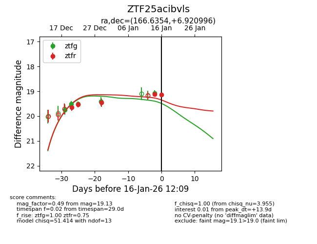
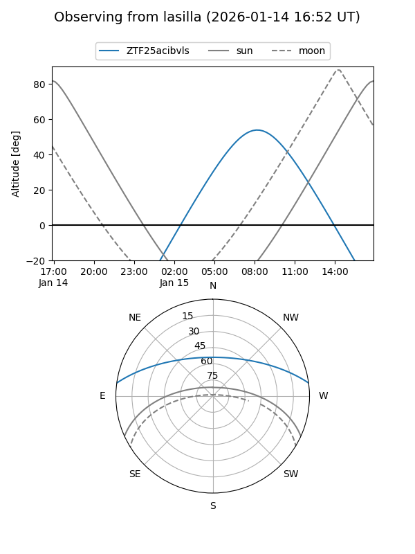
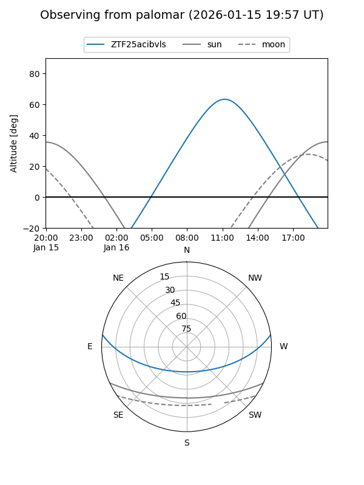
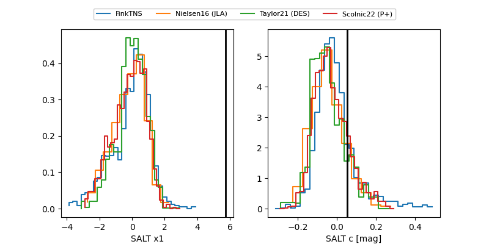

ZTF25acibvls
Target ZTF25acibvls at 2026-01-14 12:05
Aliases and brokers:
FINK: link
Lasair: link
ALeRCE: link
alt names
ZTF25acibvls (ztf,fink_ztf)
Coordinates:
equatorial (ra, dec) = 166.6354,+6.92099
equatorial (HMS+DMS) = 11:06:32.49,+06:55:15.57
galactic (l, b) = (247.1954,+57.94214)
Flags:
Photometry:
last ztfg=19.07, ztfr=19.45
5 ztfg, 3 ztfr detections
Lightcurve

Visibility


Additional plots
